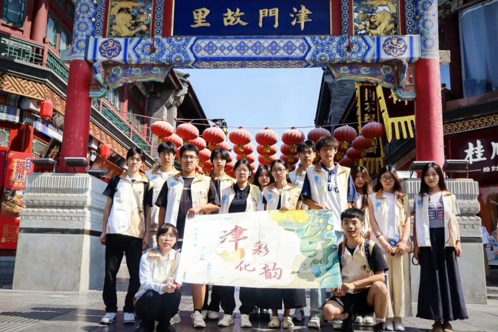
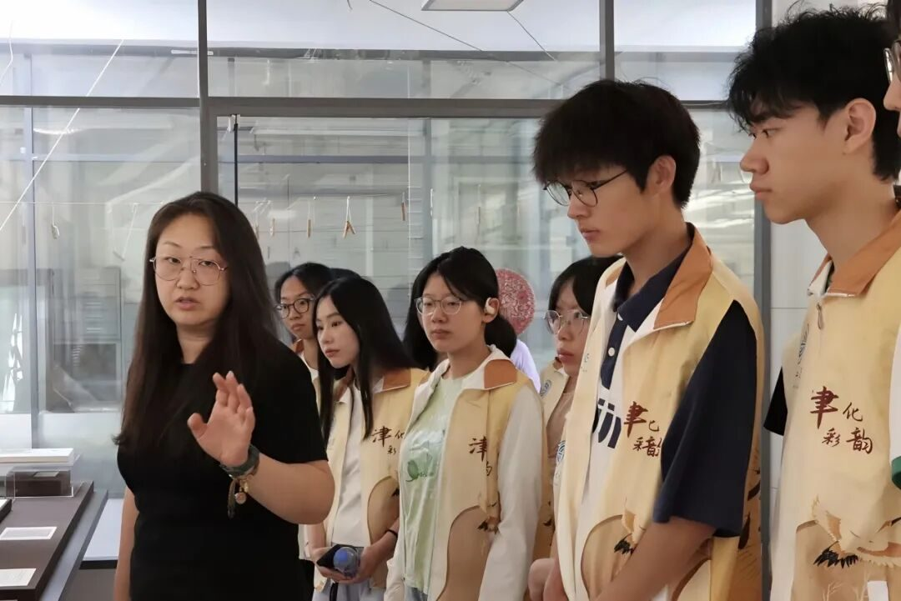
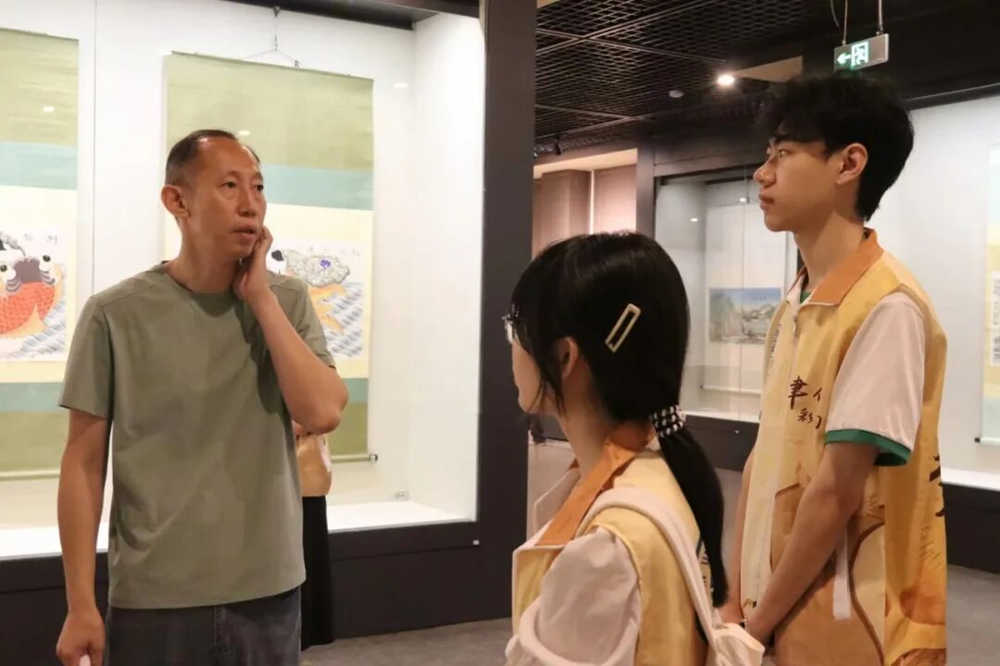
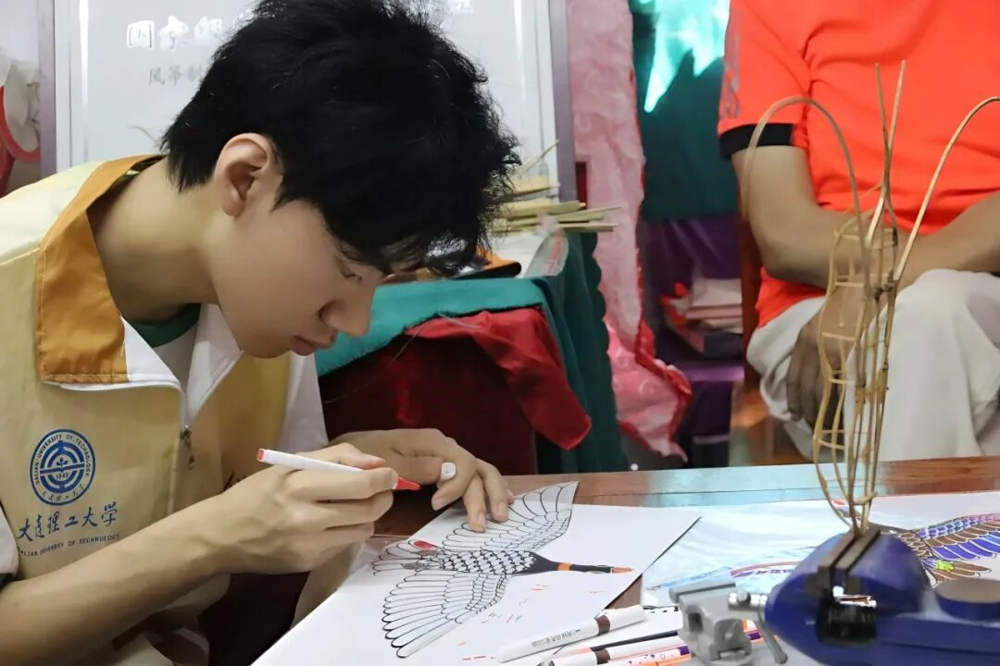
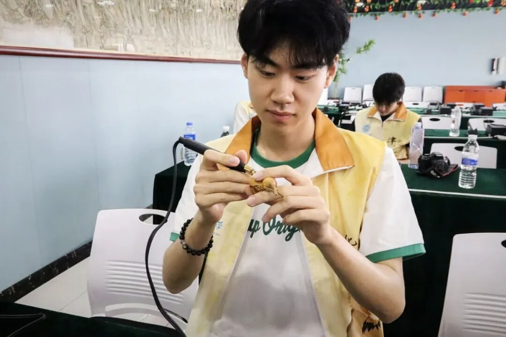

【行者无疆·津彩化韵】个人实践感悟——史子鸣


“文运同国运相牵，文脉同国脉相连。”全球化浪潮下，文化交融的大门愈发敞开，非物质文化遗产正迎来走向世界的黄金机遇。我有幸与行者们一道，探寻“非遗+国际化”的现状与前景，完成了这场意义非凡的非遗探索之旅。
当我踏入天津的土地，仿佛走进了一座非遗的宝库。我们穿梭于天津的大街小巷，走进了天津博物馆、天津民俗博物馆、杨柳青木版年画博物馆，在那里，历史的厚重感扑面而来，每一件展品都像是在诉说着一段段古老的故事。我们还在天津古文化街进行街访，聆听市民们对天津非遗国际化现状的见解与感受。

而与非遗传承人的学习体验，更是让我深受触动。王氏泥塑传人王美老师、津派面塑传人张亚杰老师、“风筝魏”传承人魏国秋老师……他们几十年如一日地钻研技艺，不为名利，只为将这些古老的技艺传承下去。我亲眼目睹了他们精湛的技艺，亲手触摸了那些蕴含着千年文化底蕴的作品，那一刻，我仿佛穿越时空，与历史进行了一场亲密对话。

在文字撰写工作中，我努力记录下每一个精彩瞬间，每一次心灵触动。将行者们的热情、传承人的坚守以及非遗文化的魅力一一呈现。通过这些文字，我希望能让更多的人了解天津非遗文化的现状，看到“行者无疆”在传承之路上的切实行动，唤起大家对非遗传承与发展的关注。

这段实践经历，对我而言，不仅是一次简单的实践活动，更是一场文化苦旅与成长蜕变。在未来的日子里，我将带着这份宝贵的经历，继续在文化传承的道路上坚定前行，为非遗文化的发展贡献自己的一份力量，让中华优秀传统文化在新时代绽放出更加绚烂的光彩。
来源 | 行者无疆实践团
图片 | 行者无疆实践团
文字 | 史子鸣
编辑 | 姜骅洲
审核 | 张瑶琪 李凌志 杩健辉
责编 | 邹靓靓 周 亮